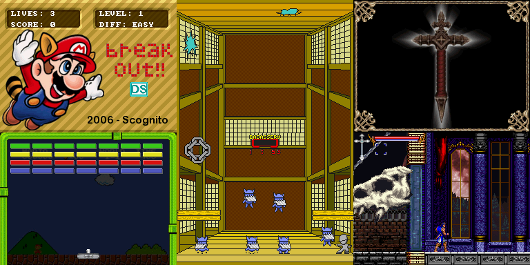
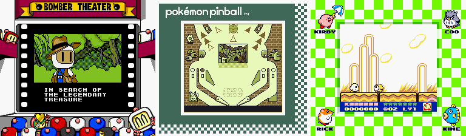
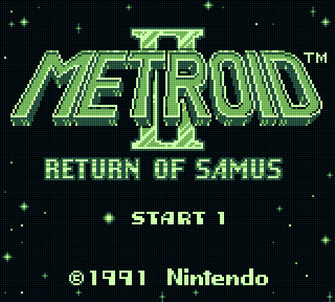
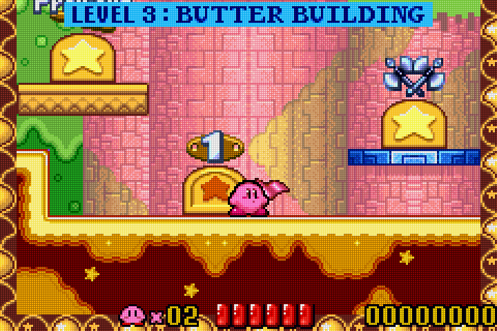
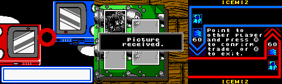

2017 was a crazy year for GBE+. As evidenced by the Edge of Emulation articles, there was plenty of ground to cover regarding Game Boy hardware that had never been properly emulated before.
April 2017 - Merge experimental NDS core
GBE+ has been flirting with NDS emulation since 2015. All of that code was kept in a separate branch up-to-date with master. As soon as 1.1 came out last April, the NDS core was merged into the main codebase. Because the NDS branch was already very syncronized with master, there were no major conflicts once the two were joined. Although a lot of work went into the NDS core after that, it still isn't ready to play any commercial games just yet. However, over the course of 2017, various bits of homebrew that were previously unplayable or unbootable are now functioning in GBE+. In fact, GBE+ went from only being able to display simple backgrounds in NDS homebrew, to supporting sprites, some sound, button input, and the touchscreen. It isn't much, but it's definitely better than the infamous "black screen of death" that plagues most emulators when they first begin. Hopefully 2018 will see much more progress in this area.

May 2017 - Barcode Taisen Bardigun scanner support
This marked the start of the Edge of Emulation, my own personal quest to emulate the unknown in order to preserve and document gaming history. Barcode Taisen Bardigun was an obscure Japanese game where players raise monsters and battle them. The neat catch here was that the game used special cards to grant new abilities to the little critters. Cards had barcodes on them that the game would read via an attached scanner. The whole journey was recorded here last year. GBE+ is the first Game Boy emulator to support this accessory, but all documentation and research is freely available as part of the project. Additionally, GBE+ comes packed with 3 cards already converted into a binary format so anyone can play this game without having the scan anything themselves.
June 2017 - Super Game Boy core
I've been looking to add SGB support for a while now. In 2017, I couldn't put it off any longer. To be honest, this isn't a fully separate core. A large portion of the SGB code is literally just copied directly from the DMG-GBC core. Still, to better organize things, SGB support was spun off into its own mini-core. It mostly handles all of graphical differences the Super Game Boy introduces while leaving the rest of the GBE's Game Boy code untouched. To further clarify things, the SGB core is not actually trying to emulate an SNES running a Super Game Boy cart (as higan does), rather it's emulating Game Boy software that thinks it's operating in a Super Game Boy cart (as VBA-M, BGB, and most other Game Boy emulators do). Basically, GBE+ convinces Game Boy games that they're running on a Super Game Boy cart, then the games send special commands (for colors and the borders) which GBE+ intercepts and processes. Unfortunately, since GBE+ doesn't emulate an SNES, some games that take full advantage of the SGB's capabilities (and run actual SNES code!) don't work. This largely only affects one game in particular (Space Invaders). Maybe one day GBE+ will do something crazy an emulate an SNES just for that. Maybe...

July 2017 - Barcode Boy support
More weird Game Boy hardware was emulated midway through 2017. The Barcode Boy was something like an early 90s e-Reader, allowing players to scan cards to use in various games. The cards themselves generally had different characters (or cars in one game) with different stats. Previously, only a couple of emulators even bothered to try supporting this accessory, but neither of them properly emulated the device. They generally just made up random data to get the games working. GBE+, on the other hand, actually followed the Barcode Boy's communication protocol and let players use real barcodes taken from the cards.
Most importantly, however, all known Barcode Boy cards have been found and are in the process of being preserved! Thanks to a fellow named ClawGrip from the MAMEWorld forums, I obtained high-resolution scans of every Barcode Boy card. Using that, it was possible to dump the actual barcode data to binary files. The cards for Monster Maker and Battle Space are now bundled with GBE+, so no one has to get the cards themselves or mess around with anything. I'm currently in the process of converting the barcodes for Family Jockey 2, Famisuta 3, and Kattobi Road, so they'll be added shortly in the coming weeks.
August 2017 - Zok Zok Heroes' Full Changer support
One of the craziest Game Boy accessories ever devised, the Full Changer was an IR device that users had to shake in different directions in order to send special to the GBC, thereby transforming the player into different heroes. Once again, GBE+ is pushing boundaries by emulating what others have never done before. Previously, only cheat codes and hacks could let people play Zok Zok Heroes. Now, however, GBE+ natively supports this game with just a push of a button. Due to time constraints, only 1 entry exists in GBE+'s database for the game, so players can only transform into 1 Hero at the moment. Hopefully 2018 will see that number increase.
October 2017 - LCD Mode Shader
It may seem weird to include some graphical fluff as "progress", but I'm genuinely pleased with the look and feel the new LCD Mode shader brings to GBE+. In addition to slightly emulating the original display of many Game Boy systems, the LCD Mode also happens to somewhat darken colors for GBA games to lessen the brightness of some titles. It's a good compromise between the existing Pastel and Washout shaders (which desaturate game colors, almost too much in some cases). The effects really show off when running games at higher resolutions like 6x. While it's all a matter of personal taste, it's now a proud option in GBE+.


December 2017 - DMG-07 support
Ending 2017 with a bang, GBE+ finally gained support for the DMG-07, a 4-player adapter used in only a handful of old Game Boy games. After a winding process to reverse-engineer the device from scratch, I finally managed to replicate the DMG-07 protocol in GBE+. While the emulation itself is very, very slow due to syncronization, it was the first time 4-player modes in games like FaceBall 2000 or F-1 Race had ever run outside the original hardware.
January through March 2018 - Improved GBC infrared support
In last year's Progress Report, GBE+ gained basic but limited support for the Game Boy Color's infrared port. At the time, it only worked with Pokemon Gold, Silver, and Crystal for Mystery Gifts. At the start of this year, lots of effort went towards fixing other games and expanding compatibility. With all that work, GBE+ now emulates a host of IR features that GBC games used. Trade high scores in Super Mario Bros. DX, or swap photos in Donkey Kong Country, or send a message to your girlfriends in Mary-Kate and Ashley's Pocket Planner. Not only that, but a number of emulated external devices were added: TV Remotes, the Pokemon Pikachu 2, the Pocket Sakura, and even ordinary household lamps! Each of those was used with select GBC titles for various IR communications, so GBE+ now recreates their IR signals. If it sounds like that's insane, it pretty much is. More information will be coming up in a dedicated Edge of Emulation article, so keep your eyes open in the next week or so.

The future is now
That just about finishes all of the significant changes in GBE+ for the past year. A big theme in 2017 was emulating the unknown, emulating stuff that has eluded us for years. 2018 will be no different. GBC IR support is finally cleaned up for a majority of games, and that's just one of the few items I have on my checklist for the immediate future. Although no commerical NDS games run so far, the NDS core received most of the changes this previous year. A lot of code went in to it, and even if it's just homebrew, the year before that hardly anything ran before exploding. 2018 is the year NDS emulation takes serious flight in GBE+, however. Now that I have my own working Windows-based machine, I plan come up with my own buildbot so development builds can be ready daily instead of these once a year stable builds. With any luck, 2018 will be filled with even more surprises than last year.